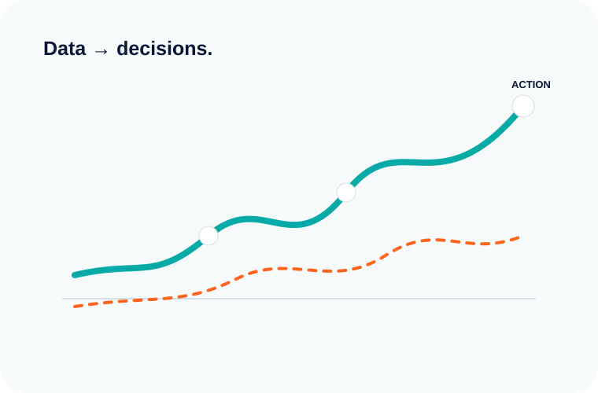

When should you build custom software?
A framework for deciding whether differentiation, workflow fit or integration justify custom engineering.
Short, practical perspectives on product, engineering, automation and digital transformation.

A framework for deciding whether differentiation, workflow fit or integration justify custom engineering.
Start with boundaries, observability and incremental replacement instead of a risky rewrite.
Look for repetitive decisions, document-heavy workflows and high-volume information tasks.
Better internal software can reduce training, errors and operational friction.
Make assumptions visible, deliver increments and keep technical decisions close to business context.
Focus on repeatable deployment, resilience, visibility and sensible operating cost.
We keep the visual, technical and business story connected so the website explains the work—not just lists it.